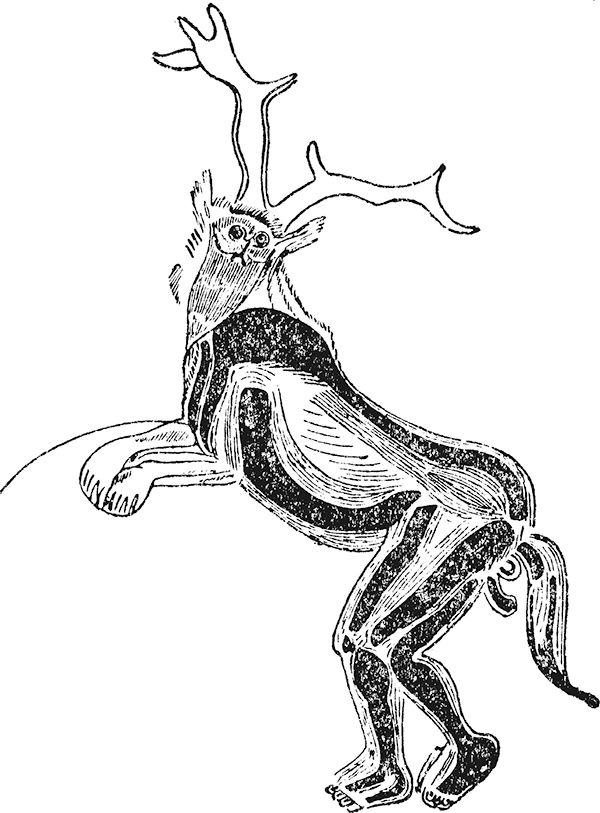
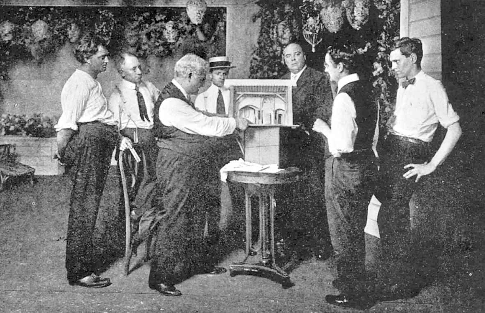

戏剧及其艺术姐妹歌剧最重要的区别性特征之一就是其创作涉及的各种各样的人。人们通常将一件艺术品看作单个艺术家（诗人、画家、建筑师或音乐家）的创造，但尽管剧作家一般（虽然并不总是）都是独立创作，当他/她的戏剧作品转换成戏剧表演时，却需要一整个团队的协助。本章中，我们将考察剧作家之外的其他参与者所扮演的角色，以及他们在历史上不同时期和世界上不同地方对戏剧表演所做的贡献。
对几乎所有的戏剧表演形式而言，演员显然都是最重要的贡献者。如果我们再次回到埃里克·本特利给戏剧所下的基本定义“A扮演B而C在旁观”，我们或许会注意到这不仅是对戏剧的定义，也是对表演艺术的定义。当一个人站在他人面前假扮某人或某物之时，表演和剧场瞬间就形成了。在这个最基本的形式中，演剧甚至不需要众人的创作；单个的艺术家——演员，就如同画家或诗人一样，直接当众呈现自己的创作。当然，通常情况下，这位演员会得到很多其他艺术家的辅助。有为他提供服装、设置布景的设计师，有为他提供台词的剧作家，有将他置于一个特别的概念世界中的导演，等等。我将依次讨论他们的贡献，但显然得先从演员说起。
有证据表明，表演可以追溯到最初的人类文明。法国三兄弟洞的墙壁上发现了一幅神秘的图形，一般认为，这幅通常被叫作《巫师》的画描绘了一位身穿鹿皮、头戴鹿角的巫师或演员正扮演角色。这幅人物图画来自石器时代，大约为公元前13000年（图9）。亚里士多德认为戏剧诞生于一位名叫泰斯庇斯的演员走出酒神颂合唱队来扮演一个具体人物的时候。为了纪念他，演员在西方仍常常被称作“泰斯庇斯”。尽管合唱仍然是古希腊戏剧的一个重要组成部分，演员相对的重要性却稳步提升。公元前5世纪，埃斯库罗斯增加了一个演员，这样便有了不涉及合唱的对话；索福克勒斯又增加了第三个，但整个古典时期就没有再增加了。起初，剧作家自己扮演剧中的主角，但到公元前5世纪末，所有的三个角色都由专业演员扮演。

图9 法国旧石器时代三兄弟洞壁上着装的演员
男演员不仅演男性角色，也演女性角色，但总体上古希腊戏剧基本无关乎现实主义。所有的演员都穿着夸张的戏服，戴着大面具，脚蹬高底靴，给人以一种大于真人的印象。穿戴传统戏服和面具表演的习俗传入罗马戏剧，延续到古典时代晚期的罗马哑剧。面具与这门艺术之间的联系非常紧密，悲剧和喜剧面具的一种风格化表现今天仍然是戏剧的标准象征。
亚洲最早的一种重要的戏剧形式即梵剧不使用面具，但是从梵剧传统中演变而来的较晚的几种舞剧却普遍使用面具。演员有男有女，来自宗教团体，扮演僧侣和庙堂侍者。到了11世纪，女人只在寺庙内表演，而男人则可以在寺庙外表演。一般而言，从中世纪开始，欧洲戏剧逐渐变得更加强调现实，诸如面具和舞蹈这样的形式元素逐渐消失（例外的是某些宫廷演出的盛大场面和幕间节目，以及传统上部分佩戴面具表演的意大利即兴喜剧）。然而，至少直到殖民时代，世界上大多数地方的戏剧表演常常与仪式紧紧地联系着，还与这些形式元素在总体上有着密切的联系，表演艺术也是如此。面具表演的传统保存在能乐以及像朝鲜“假面剧”（Talchum ，字面意思是“面具舞”）这样的戏剧形式中。其他形式的戏剧中，如歌舞伎或印度南部的“卡塔卡里”舞剧，面具一样精致的装扮传达出相似的印象，这种印象又因装饰华丽的传统戏服得以加强。西非，特别是尼日利亚，拥有重要的头戴面具的舞蹈戏剧传统；拉丁美洲，特别是墨西哥和危地马拉也有这样的戏剧传统。
尽管欧洲中世纪不乏女性登台表演的情形，但直到16世纪中叶的西班牙和意大利、1600年左右的法国以及1660年王政复辟时期的英格兰，女性上台演出才变得司空见惯。在那以前，特别是在莎士比亚戏剧中，女性的角色都是由男孩和年轻男子扮演的。如同今日我们在伦敦重建的环球剧场所看到的那样，这种做法现代还不时地在搬演伊丽莎白时代的作品时重现。然而，现实主义在西方剧坛的支配地位从17世纪起就一直强化按男女性别分配角色的做法。但也有显著的例外，如女扮男装的“马裤”角色，自女性首次登上英国的舞台，这样女扮男装式的反串一直都很流行，特别是在英格兰；此外还有男扮女装的各式各样的反串。这两种反串，当然都是近来戏剧中性别研究的一个重要组成部分。
很多时代很多文化中，演员都是独自表演，但更普遍的是，他们是作为一个演出团体或一个剧团的一部分出现的；大多数这样的演出团体在长时间内一直都是比较稳定的，直到近代才有所变化。有些情况下，尤其是文艺复兴时期游动的即兴喜剧剧团，它们是由一个家庭或家族成员组成的。这种构成一直是剧团组织的标准模式，这种模式直到19世纪晚期才有所变化。那时，像莎拉·伯恩哈特这样的著名演员发现临时加盟出价高的剧团在经济上更加有利。如今，尤其是在美国，演员们仍然长期合作的剧团在演剧界已经是凤毛麟角了。大多数情况下，演员们被召集起来搬演一部戏，演完即分道扬镳。
这破坏了传统的师徒传承的演员培训体制（这样的体制仍见于世界绝大多数地方），严重削弱了美国演员教育和就业系统的稳定性。老牌剧团的另一个效果是可以鼓励演员在各种不同的戏中重复扮演某些类型的角色和表演某些类型的关系，这样某个演员就会出演诸如天真无邪的少女或仁慈宽厚的老大爷这样一类“专演角色”或“业务领域”。很多剧作家都是围绕着这类人物及其之间的固定关系来创作剧本，这种情形一直持续到19世纪。
然而，随着浪漫主义时代的来临，以及个体艺术风格的相互竞逐，循规蹈矩的旧体制开始瓦解。浪漫派演员不仅因为感情丰富而著称，还因为他的不可预测性，以及愿意以非常不落俗套的方式来诠释像莎士比亚作品中的传统人物角色而名扬天下。虽然18世纪的演员，比如日本古典戏剧舞台上的演员，因为把激情和情感力量赋予传统表演风格而备受赞誉，浪漫派演员却致力于通过独创而别出心裁地获得这些舞台效果。
无独有偶，18世纪末欧洲的理论家第一次开始思考情感在表演中的作用。只要表演还被视作主要是有效地重复约定俗成的手势、语调和身段，就不会产生这种思考。德尼·狄德罗以他著名的“悖论”极好地宣示了他在这个问题上的立场，这个“悖论”即最好的演员不怎么感情用事，而是掌握了恰如其分地模仿情绪的技巧。而浪漫派演员却致力于将表演建立在真情实感之上。用“脑”演和用“心”演这两个针锋相对的立场从此一直在西方表演理论和表演培训中回响。最积极地鼓吹演出中要调动情感的无疑是19世纪末莫斯科艺术剧院的导演——康斯坦丁·斯坦尼斯拉夫斯基。他倡导的演员“活在角色中”的概念是美国“方法派”表演的滥觞，后者成为演员诠释主导了西方20世纪剧坛的现实主义戏剧所使用的重要方法。
尽管在现代，受欢迎的演员获得了极高的曝光度和社会地位，然而在历史上大多数时期和世界上大多数地方，他们的社会地位低下，生活漂泊无定。当受到君主和其他统治者的庇护时，他们充其量也只是充当一种宫廷官吏，对皇室主人言听计从，但更多时候他们生活在社会的边缘。歌舞伎开始的时候实质上就是妓女的展演，女演员常常被合理或不合理地怀疑从事这一行业。西方教会几乎从一开始就对表演这一行持怀疑的态度，还常常禁止演员领圣餐或参加宗教活动。直到19世纪，演员这一职业才在欧洲获得社会的普遍尊敬。即使在今天，无论男女演员，不管他们声名多么显赫，对大多数公众来说，他们身上仍然散发着一种淡淡的波西米亚人的气质。
这些迷人、神秘、善变又性感的人物——演员，他们以某些方式入木三分地反映出我们自己，又以其他的方式不可思议地表达异类，正是他们的冒险和互动一直以来都支撑着戏剧舞台。
本书独辟一节专门讨论傀儡戏，对此西方读者或许会觉得奇怪，但是如果我们仅仅考虑真人的表演，那就会置世界剧坛的一个非常重要的组成部分于不顾。世界上找不到任何一个地方不存在意义非凡的傀儡戏传统；在亚洲，傀儡戏的重要性与真人表演戏剧的重要性不相上下。各个部分由线绳调动的动物形玩偶和人形偶在埃及和印度河流域已有所发现，它们可以追溯至公元前2000年以前，可能是用来讲故事，也可能不是。然而，用于讲故事的无生命人偶的最早记录来自公元前5世纪的希腊，这也是希腊真人剧场的全盛期。玩偶一般是陶制的，用线绳操控。三个世纪后，印度南部记载了泰米尔木偶表演。世界上大多数的木偶都是由一人操纵的，多数是用线绳从上面牵引，或是从下面用杖头或其他支撑物操控。显著的例外是日本的文乐，文乐中每个大型人偶都是由三名身穿黑衣、现身舞台的傀儡戏表演者操纵，他们一人控制人偶头颅和右臂，第二人控制左臂，第三人控制腿脚。
从上面由线绳操控的木偶到1600年左右才开始在意大利被叫作“牵线木偶”，尽管在此三个世纪前意大利和法国就有表演牵线木偶戏的记载。早在13世纪，西西里就有改编自中世纪游吟诗的木偶戏（Opera dei Pupi ）的演出，这个传统一直保持到今天。很多人认为早期意大利的即兴喜剧深受西西里木偶戏传统的影响，而即兴喜剧后来又启发了英国偶戏人物潘趣，这一人物有记录的首演是在1662年，从此它便在英国文化中占有显著地位。尽管欧洲向来都有很多其他形式的木偶戏表演而且至今不衰，牵线木偶这种形式却一直占据着主导地位。14世纪末，乔叟注意到木偶在英格兰的使用，这些木偶表演到了伊丽莎白时代便成为贵族家庭聚会和游艺集市上共有的一项娱乐活动；最值得一提的是，这些木偶表演为本·琼森于1614年创作的《巴托罗缪市集》中的一个重要场景提供了依托。
尽管很少得到传统戏剧学者的高度关注，牵线木偶从来都是欧洲戏剧的一个重要组成部分。18世纪英格兰最流行的戏剧表演便是木偶戏《潘趣与朱迪》，这台木偶戏还被成功地输出到欧洲大陆和美洲。牵线木偶歌剧在中欧极受欢迎，这个传统今天仍然被充满敬意地保存在1913年建成的萨尔茨堡牵线木偶剧院里。
英格兰木偶戏中潘趣这个人物的原型是意大利喜剧人物普尔奇内拉，也是法国喜剧人物波里希内儿的原型。波里希内儿于1804年首次闪亮登场，可是其光芒很快就被另一部牵线木偶戏中的吉尼奥尔所遮蔽，后者在法国受欢迎的程度很快就媲美英格兰的潘趣。到了19世纪末，象征主义理论家和剧作家推崇牵线木偶，将其视作一个能够比奉行个人主义的人类演员更深刻地探寻世界潮流的抽象人物，而且这些人物还完全处在导演的掌控之中。作为剧场人物，导演完全掌控演出的方方面面，这是象征主义理论的一个重要组成部分。早在1810年，德国浪漫主义文学家海因里希·冯·克莱斯特就在他的一篇著名论文中表达了牵线木偶相比演员在剧场上的优势，爱德华·戈登·克雷在其1908年发表的《演员与牵线木偶》一文中更是大肆宣扬这种优势。20世纪欧式的牵线木偶仍然是欧洲大陆剧坛的一个重要戏种，而且还传播到澳大利亚那样遥远的地方。
在东亚和中东，傀儡戏的主导形式并不是牵线木偶戏，而是影戏。影戏使用的是从下面操控的二维傀儡，背光投射到半透明的屏幕上形成影像。影戏据说源自中国公元前1世纪的汉武帝时代，在后来的朝代以及13世纪征服中国的蒙古人所建立的王朝中一直都是一种重要的艺术形式。蒙古人后来把这种艺术形式带到他们扩张的帝国的其他地方，最重要的是带进中亚和中东地区。
直到近现代，印度还盛行着影戏，这个传统很可能最初是从中国输入的。但今天影戏的重镇却在东南亚，那里的影戏艺术要么源自印度，要么源自中国。马来西亚、柬埔寨和泰国都活跃着影戏表演，但最著名的莫过于印度尼西亚的“哇扬”皮影戏。“哇扬”皮影戏剪裁别致、修饰精美的人物是东南亚戏剧的象征，与作为西方戏剧象征的希腊面具一样闻名遐迩。
影戏发展的另外一个重要地区是中东。学者们一致认为，16世纪影戏从埃及被带到土耳其，继而从土耳其传遍奥斯曼帝国全境，形成了一些至今仍然盛演的影戏传统，其中最重要的是土耳其的“卡拉格兹”皮影戏。但关于这种形式是如何在埃及发展起来的则是众说纷纭。联想到古埃及的陶偶，有些人主张埃及影戏是在没有亚洲影响的情况下独自发展起来的，而其他人则注意到早在5世纪就有阿拉伯商人活跃在印度尼西亚，因而认为埃及影戏是从世界这个地方引进的舶来品。无论如何，埃及在10世纪就已经形成了成熟的皮影戏，并在数个世纪内一直是埃及戏剧的最重要形式。13世纪末，埃及剧作家伊本·达尼亚尔为这种戏剧形式创作了一些中世纪最为成熟的剧本。
尽管木偶戏和影戏是傀儡戏最常见的两种基本形式，在世界上数十个具有强大傀儡戏传统的国家还发现有很多种不同的形式，从如布偶一样深刻地影响了美国电影、戏剧和电视的掌臂偶到充满异国情调的泰国水傀儡，不一而足。泰国水傀儡表演看起来是在水上进行，但操纵却是在水下通过杖头进行的。傀儡及傀儡操纵师一起在世界剧坛中持续扮演着重要的制作人的角色。
可以推测，演员最早是在露天里表演，后来在挂着布幔的灰色背景前表演，再后来在比较灰暗的建筑背景前表演，就如同我们在梵剧的舞台上或希腊和罗马的古典剧场中所看见的那样。根据亚里士多德的说法，装饰灰色背景早在索福克勒斯时代就开始了。亚里士多德断言，索福克勒斯“发明了布景绘画”。然而，设计师直到文艺复兴时期才作为重要的戏剧艺术家出现在西方。那个时期，先是意大利，然后是法国和其他地方的宫廷，鼓励剧场内外布置富丽堂皇的场景，以炫耀他们的财富和权力。像列奥纳多·达·芬奇这样重要的艺术家为这些剧场设计场景，设计师在戏剧活动中的贡献常常远超演员。
英格兰宫廷豪华奢侈的假面舞表演也同样如此；文艺复兴时期在欧洲大陆的影响下，这种娱乐表演在英格兰宫廷中大行其道。英格兰第一位舞台设计师伊尼戈·琼斯与剧作家本·琼森就谁的艺术在这些表演中更为重要发生了一场著名的争执，而演员却基本上被忽视了。同时期莎士比亚的作品却没有出现这样的问题，因为莎士比亚的作品是为公共剧场而作，而公共剧场的背景基本都是朴素的，不需要布景艺术家设计背景。
总体上，新古典主义的话剧也还是如此。17和18世纪，欧洲目睹了布景设计的繁盛，但这主要是为歌剧、宫廷表演或只是为华丽的雕刻艺术作品而创作的。这些设计集中地体现在壮观的巴洛克艺术中——令人叹为观止的几乎完全是建筑学意义上的精美构图，并以鲜明突出的多点透视取代文艺复兴时期的一点透视。意大利的比比恩纳家族以及与他们联手的加利家族是哈布斯堡王朝各宫廷最受欢迎的设计师，在两个世纪里都在欧洲设计界占据着主导地位。
因其传统的基本不变的舞台，日本能乐并不真正需要设计师来设计布景，可是歌舞伎和文乐在18世纪却日益诉诸视觉场面和精巧的设计，视觉效果和精巧设计遂成为歌舞伎和文乐剧场体验的一个重要组成部分。然而，与这种表演场面相关的重要人物却不是设计师，而是剧作家自己——江户时代的中村伝七和今井省三。
浪漫主义为欧洲剧坛带来了一种全然不同的风格；不同于巴洛克艺术设计，浪漫主义不仅对话剧产生了深刻的影响，也深刻地影响了歌剧。菲利普·詹姆斯·德·卢泰尔堡是浪漫主义舞台设计的代表人物，他没有像比比恩纳家族的设计师那样受过建筑学的训练，却接受过风景画的训练。他在伦敦与杰出的演员大卫·加利克合作，不仅把更加自然的场景引入剧场，还引发了业界对情绪和氛围的新的兴趣。他破天荒地使用最新发明的具有管状灯芯的灯头来帮助取得这些剧场效果，因此他也可以被视为第一位舞台灯光设计师。
布景设计师在19世纪早期的戏剧和歌剧界声名鹊起，他们创设新颖的浪漫派风格的视觉场面，如米兰斯卡拉歌剧院里亚里山德罗·圣奎里科所制作的火山喷发的著名场面，或像巴黎皮埃尔·西塞里的旋转楼梯和幽灵般的回廊这样的宏大制作。与西塞里合作的亨利·迪蓬谢尔等舞台机械师，也在此时因为在协助剧场制作中发挥重要作用而崭露头角，后来还不时被列入一场戏剧演出的主要艺术家之中。19世纪30年代，查尔斯·基恩在莎剧演出的细节中展现的历史主义继续影响着19世纪后期的宏大场景，并在亨利·欧文和比尔博姆·特里导演的戏剧中达到登峰造极的程度。所有这些顶级导演都与许多设计师合作，常常为同一部戏设计出不同的场景。
尽管戏装从戏剧这门艺术诞生以来就一直是演员演出的一个组成部分，但直到19世纪戏装设计师才被普遍认为是整体演出的一个重要的贡献者。詹姆斯·普兰谢是奠定戏装设计师在戏剧表演中重要地位的首要人物之一，他说服查尔斯·基恩相信基于史实装扮演员的重要性，这样的着装传统始于1842年基恩执导的《约翰王》。
针对这样精心修饰打扮的现实主义追求，20世纪初出现了重大的反对声浪，反对者倡导一种更为简洁、更能唤起情感的“新舞台艺术”风格。领导这场运动的是瑞士人阿道夫·阿皮亚和来自英格兰的爱德华·戈登·克雷，他们的著述和设计使布景设计师在20世纪取得新的声望。美国的罗伯特·埃德蒙·琼斯或乔·梅尔齐纳、德国的卡斯帕·内尔或维尔弗里德·明克斯、英格兰的莫特利或约翰·奈皮尔、俄国的亚历山德拉·埃克斯特等设计师与他们合作的演员和导演一样声名显赫。
20世纪末，像来自美国的罗伯特·威尔逊、捷克斯洛伐克的约瑟夫·斯沃博达、波兰的耶日·格洛托夫斯基、德国的安德烈亚斯·克里金伯格这样的艺术家，不仅都是著名的设计师，也是同样著名的导演。
自从以阿皮亚为首的新舞台艺术的创建者坚持将灯光置于剧场核心位置以来，灯光设计师就被认为是创造现代剧场的又一个重要的参与者。尽管音响自戏剧这门艺术诞生以来一直都是戏剧表演的一个部分，第一位被指定为音响师的却是丹·杜根，他于1968年被位于旧金山的美国音乐戏剧学校（American Conservatory Theatre）任命为音响师。今天，音乐剧和话剧都照例将音响师列入主要艺术家中，负责设计、安装、调试听觉效果。随着剧场越来越多地运用其他媒体，经常还会有其他人士参与其中，特别是像影片放映员、录像录影艺术家、傀儡操纵师和数字音像效果制作人等参与创设剧场视觉环境的人。今天，剧场设计师们可以组建一个庞大的创作团队。
由于戏剧表演一般需要若干艺术家协力工作，通常就需要有人来协调工作。这个人就是导演。在具有牢固确立起来的表演传统的戏剧中，如日本古典能乐和歌舞伎，不必非得有这样的人手来协调。除此之外，导演是不可或缺的。古希腊戏剧表演中，导演的功能是由剧作家承担的。那样的做法常常为历史悠久的戏剧传统所仿效，在这样的传统中，剧作家、演员和戏剧团体之间时刻保持联系，如19世纪法国的喜剧界。有时候，剧作家不仅当导演，而且还担任主演，这种情况以埃斯库罗斯和莫里哀最为著名。梵剧以及与梵剧相关的印度戏剧里面有一个类似的人物叫sutradhara ，字面意思是“提线人”，这个名字显然指涉的是牵线木偶戏。这个人物策划祈祷和开场仪式，并出演开场戏和框定场景戏，但也同时充当演出的总务和总经理。
从即兴喜剧时代起一直到19世纪，流动剧团一般的惯例为首席演员（即剧团团长）也是导演。类似的角色是演员兼剧务，这样的角色出现于16世纪晚期，今天偶尔还可以看到，如某个明星演员组建自己的剧团并在自己的剧场里演出的情形。欧洲19世纪绝大多数杰出的演员，如亨利·欧文和莎拉·伯恩哈特，就是集表演与剧务于一身。
在20世纪初期的西方戏剧界，总的来说，演员兼剧务这种体制为现代的导演所取代。导演监管表演所有方面的事务，时不时地还充当设计师，但一般情况下导演既不登台演出，也不从事设计工作。这个岗位的模式是在19世纪的德国由像歌德和乔治二世即萨克森——梅宁根公爵这样的艺术家建立的，到了20世纪初，再经过德国的马克斯·赖因哈特、美国的大卫·贝拉斯科，以及以康斯坦丁·斯坦尼斯拉夫斯基和弗谢沃洛德·梅耶荷德为代表的伟大俄国革命一代等艺术家们的实践得以完善（图10）。

图10 大卫·贝拉斯科与他的舞台设计师和技师在一起，1912年
同时，像英国设计师爱德华·戈登·克雷这样的理论家们提出了导演为剧场主导艺术家的概念，为其提供了观点统一性和整体性，就像理查德·瓦格纳所描述的那样，是一件“总体艺术品”（Gesamtkunstwerk ）。这个概念在20世纪席卷西方剧场，并从西方传播到世界各地的西式剧场；结果，20世纪常常被称为“导演的时代”。虽然在20世纪前的几个世纪里，最负盛名的戏剧艺术家都是集编剧、表演，偶或舞台设计于一身，但20世纪晚期最有名望的戏剧艺术家大多是导演，如法国的阿里亚娜·姆努什金、帕特里斯·夏洛尔和戏剧生涯始于英格兰的彼得·布鲁克，德国的彼得·施泰因、彼得·扎德克和弗兰克·卡斯托夫，意大利的乔治·斯特雷勒，西班牙的诺丽娅·埃斯珀特和卡利斯托·比埃托，美国的彼得·塞拉斯和罗伯特·威尔逊，巴西的奥古斯都·波瓦，以色列的尤里·廖比莫夫，日本的铃木忠志以及波兰的耶日·格洛托夫斯基。由于国际旅行的便利，他们当中很多人在全球各地和在自己的国家一样有名。
现代导演常常不仅仅只是协调其他艺术家的工作，而且自己就是创造性的艺术家，经常对过去的作品进行迥异于传统的诠释。德国人把这种趋势称为“导演剧场”（Regietheater ）；这种趋势一般可以追溯到二战之后的维兰德·瓦格纳，他根据视觉设计师阿道夫·阿皮亚的建议，以高度反传统的简约主义和抽象的舞台设计上演他祖父理查德·瓦格纳的作品。
传统主义者经常攻击“导演剧场”导演的随心所欲，但这样的作品仍然主导着欧洲大陆剧坛，特别是德语国家的剧坛，而英格兰和美国的导演总体上却沿袭着20世纪比较传统的导演方法。显著的例外是乔安娜·阿卡赖提斯或罗伯特·威尔逊那样的导演，他们只在二三流剧场或国外追求自己的事业。结果，人们在言谈著述中讲到英格兰或美国的戏剧演出时，谈论的都是演员；不像在德国，导演一般处于主导地位。
发现本书把观众置于“做戏人”一章中，读者或许会有些诧异，因为演剧通常指的是一群“艺术家”为观众“做戏”。回想本书在开头引述的埃里克·本特利给戏剧所下的那个简短的定义“A扮演B而C在旁观。”虽然这个简略表达式的确涵盖了世界范围内形形色色的戏剧表演，但是其中所含的完全被动的观众这一前设条件却绝非普世性的。西方所设想的演剧大体上就是戏剧在舞台上完成并作为一件制成品呈现给观众，而观众只是吸收呈现给他们的东西。这样的设想随着现代现实主义戏剧表演的兴起而得到强化，现实主义的戏剧表演通过将观众席变暗以及一般不鼓励观众对表演做积极回应（除非发出笑声或偶尔鼓掌外）来强调观众的被动性。
很多非西方的传统顾及并且确实期待观众更加主动的参与。南非的一位当代演员昌塔尔·史尼曼，将观众的高度参与称为非洲戏剧表演总体上的一个主要特征，他的这一断言在卢旺达的霍普·阿泽达、喀麦隆的蒙普·夸楚、纳米比亚的弗雷德里克·菲兰德、赞比亚的切拉·齐拉拉等艺术家的剧作里得到明证。阿拉伯世界传统的“街头表演”（halqa，因观众在街头围成一圈观看演员表演而得名），观众同样高度地参与其间。这在摩洛哥的塔伊布·萨迪基及叙利亚的萨达拉·万诺斯等当代剧作家的作品中得到体认，他们利用传统“街头表演”的观众参与创作了现代剧本。在巴西，极具影响力的戏剧艺术家和理论家奥古斯都·波瓦发展了各种各样使观众直接参与表演的策略，这些策略总带着某个社会政治学的目标。其中最著名的莫过于20世纪70年代兴起的论坛剧场，影响遍及全世界。论坛剧场的观众转换成波瓦所谓的“观演者”，他们被鼓励接管正在上演剧本的创作过程。今天，相似的策略在很多国家从事政治活动的剧团中被广泛采用。
20世纪后期戏剧表演的一个重大理论转变也明显改变了西方传统的关于观众的看法。这一转变就是接受理论。20世纪60年代，德国理论家沃尔夫冈·伊瑟尔和汉斯——罗伯特·姚斯在他们的著述中发展了这一理论。在戏剧领域内，这个理论坚持认为，观众绝非被动的接受者，而是积极地参与意义的创造，他们所创造的意义也绝非必然是艺术家自己本想要表达的。如此一来，戏剧表演是由演员和观众共同创作的；事实上，作为合作人的观众会和演员及其他艺术家联手“做戏”。接受理论在法国理论家雅克·朗西埃发表于2008年的一篇被广为引用的文章中得到强有力的支持，这篇题为《被解放的观众》的论文强调了观众从呈现给他们的材料中按照自己的理解创造意义的能力。
接受理论常常提及观众为共同创造者，一般而言，这时它关注的是接受的过程，以及观众个别地或集体地以迥异于艺术家想表达的方式来诠释一件艺术作品这样一个事实。当谈论某部文学作品或某一幅画时，这种接受过程是比较清楚的，但谈到戏剧表演，却可能是一种不同的动态过程，戏剧观众在创造过程中身临其境，从而能够实际上参与其间。
这方面，奥古斯都·波瓦的论坛剧场更为极端，因为观众能够参与做戏的过程，也就是说，观众在戏剧事件本身的决定上是可以真正发挥能动作用的。20世纪末和21世纪初，这种动态以各种各样的形式出现在数量可观的实验剧场上，特别是欧洲和美国的实验剧场。有些具有强烈政治倾向的剧场紧跟波瓦模式，为观众提供事先写就的脚本，然后让观众来决定人物和剧情应该如何发展。两个重要的例子分别是印度西孟加拉邦的迦纳·梵语剧团和英国伦敦的纸板剧团。组建于1985年的迦纳·梵语剧团把论坛剧场推向印度全国；纸板剧团创建于1991年，与波瓦一样，致力于在国际上推广这些方法，在远至澳大利亚墨尔本这样的地方建立起这种形式的观众剧场。论坛剧场的演出程序也被非政治性的商业剧团采纳，比如鲁珀特·霍姆斯导演的百老汇音乐剧《埃德温·德鲁德之谜》。这台音乐剧根据查尔斯·狄更斯一部未完稿的小说改编而来，在1985年上演时允许观众自己编造故事结局，于是每晚的演出均以不同的结局谢幕。
有一种大不相同的观众互动类型，是从20世纪初俄国的实验剧场实践中产生的。其中，观众混杂于演员之间，但没有被授予塑造表演的实际权利。波兰导演耶日·格洛托夫斯基在导演《浮士德》时把观众装扮成在浮士德的餐桌旁就座的客人，在导演《考迪安》时把观众装扮成一家精神病院（这部戏的场景）的病人。受格洛托夫斯基的影响，1969年理查·谢克纳在其执导的《69年的狄俄尼索斯》一剧中，着力创造他所谓的“不是一个美学乃是一个社会事件”的戏剧表演，在表演中鼓励演员与观众的混合互动。
2000年，随着新世纪的开始，伦敦的一个新成立的剧团Punchdrunk开始为观众提供一种更加开放的机会，在所谓的沉浸式剧场中建构剧场体验。Punchdrunk在搬演以莎剧《麦克白》为灵感的《不眠之夜》一剧时获得了巨大的成功，特别是2009年在纽约再度搬上舞台后，沉浸式表演在伦敦和纽约成了一种风尚，并随后风靡世界上很多其他的戏剧表演重镇。尽管沉浸式剧场与装置艺术和沉浸式电子游戏有着千丝万缕的联系，但正如我在本书第一章中所言，沉浸式剧场来源于20世纪晚期国际剧坛上出现的特定场地剧场。尽管早期的特定场地剧场表演仅仅是将观众汇聚在传统的剧场空间之外的场所，这样的表演却仍然期待观众如同在传统的戏剧表演环境中那样保持就座的被动状态。20世纪80年代，一些剧院，特别是伦敦的剧院，开始在不同的地点上演戏剧作品，观众们得巡回于不同的地点观戏。这种剧场一般被称作漫步剧场或散步剧场，引领这种剧场表演的一直是兰开斯特的公爵剧场，这家剧场于1987年搬演了第一部散步戏《仲夏夜之梦》。
沉浸式剧场拓展了散步剧场的理念，赋予观众更多的自由来创造他们自己的体验。没有人把观众引导到某个特别的预排的场景，他们在一个很大的环境中随心所欲地徜徉漫步。废弃的工厂或仓库这样的大环境中有很多个性化的空间，它们常常被精心装饰，里面可能有也可能没有真正的演员。大多数沉浸式演出都围绕着一个中心情节展开，而某个观众能看到多少则部分出于偶然，部分出于选择。《不眠之夜》的沉浸式演出不鼓励观众与演员互动，实际上也不鼓励观众彼此之间互动；于2011年在纽约开演的《玩偶酒吧》则鼓励这种互动——当戏剧世界里发生了一起谋杀案时，警察把观众当作证人询问。
尽管沉浸式戏剧表演依然以英格兰和美国为重镇，它却因为实验性表演的国际化而正向全球各地传播。阿根廷第一个这样的剧团“Usted Está Aqu66”于2012年在布宜诺斯艾利斯组建，这些年来澳大利亚特别流行这种形式的演出。甚至，1997年一个叫澳大利亚互动剧场的组织在布里斯班成立，2010年发展成为国际互动剧场，标志着这种形式的表演引起了全世界的兴趣。今天世界上最杰出的互动式或沉浸式剧场集团或许是于2001年在丹麦哥本哈根成立的Signa剧团，他们最著名的演出是2007年在科隆和柏林上演的《红宝石镇神谕》。其中，他们在一个假定的中立区内建起了一整座吉卜赛村庄，访客需要护照才得进入。尽管小镇就像参与表演的居民一样有一个虚构的历史，却没有文本记录。在八天不间断的表演中，观众随意来去，并可以选择任何方式与小镇的“居民”互动——聊天、闲话、调情、睡觉、吃喝。这种体验与游客在一个陌生国度的小村庄的体验相似，观众可以表演，如果愿意的话，也可以装成一个完全不同的人，跟居民或其他访客商定了什么就可以表演什么。
尽管这些不同类型的沉浸式剧场变得越来越受欢迎，世界范围内的剧场体验绝大多数却仍然体现为接近本特利定义的主动——被动——模仿的核心结构模式。然而，流行的互动视频煽起了对参与表演和干预表演的狂热，这种日益增长的狂热已经严重地改变了全世界戏剧发展的动能，并且毫无疑问将在未来几年内仍然是戏剧经验的一个重要的新成分。如此一来，观众将被视为比以往都更名副其实的核心做戏人之一。